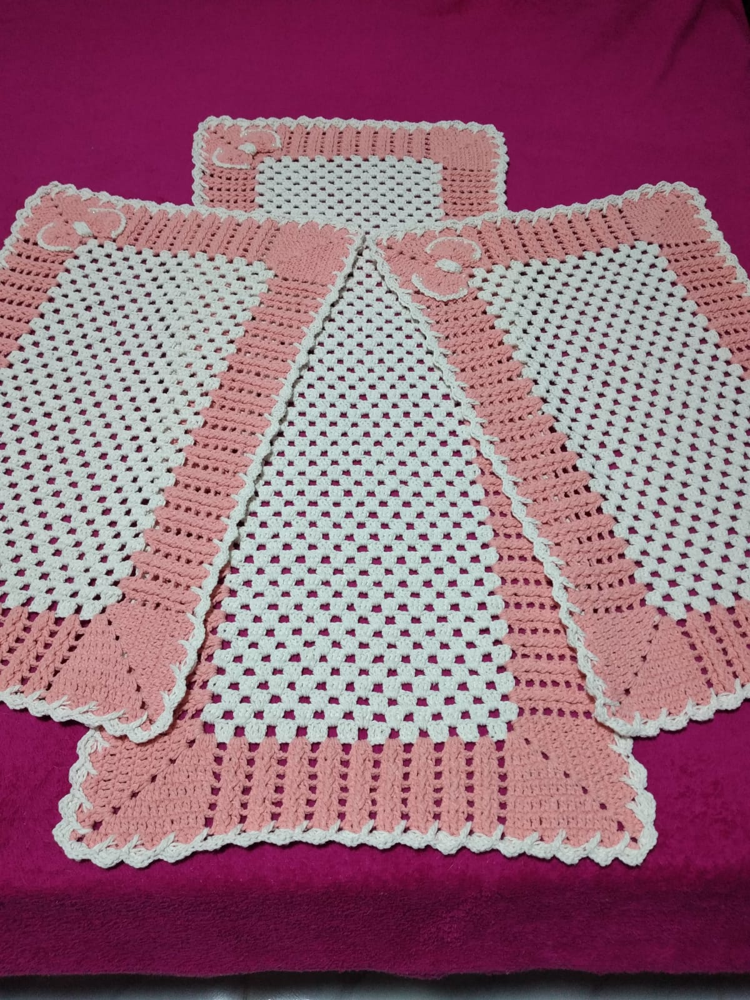

Sobre
Neila Capodeferro nasceu em Bragança Paulista, SP. Mãe de dois filhos, enfrentou a vida com coragem e cuidado. Trabalhou por muitos anos como camareira, profissão que a ensinou a valorizar os detalhes.
Desde criança, o crochê já era um encanto em sua vida. Ela se sentava na porta de casa com um barbante nas mãos, passando entre os dedos e fingindo que criava peças. Aprendeu sozinha, anos depois, e encontrou na arte uma forma de se expressar.
Após perder um filho aos 21 anos, o crochê se tornou também uma forma de cura. Hoje, cada ponto carrega memória, força e amor. Seu trabalho vai além do fio, é sentimento tecido à mão.
Galeria

Contato
üì± WhatsApp: Clique aqui para conversar
üì∑ Instagram: @pontoelinha.neila